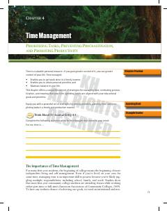

TMVaqtni samarali boshqarish, ustuvorliklarni belgilash va hayotiy maqsadlarga erishish bo'yicha amaliy qo'llanma.
Ushbu kitob talabalar va ishlayotgan insonlar uchun vaqtni samarali boshqarish, ustuvor vazifalarni belgilash va kechiktirish odatini yengish strategiyalarini o'z ichiga oladi. Muallif o'z tajribasi asosida kundalik rejalashtirish va hayotiy muvozanatni saqlash bo'yicha amaliy maslahatlar beradi.